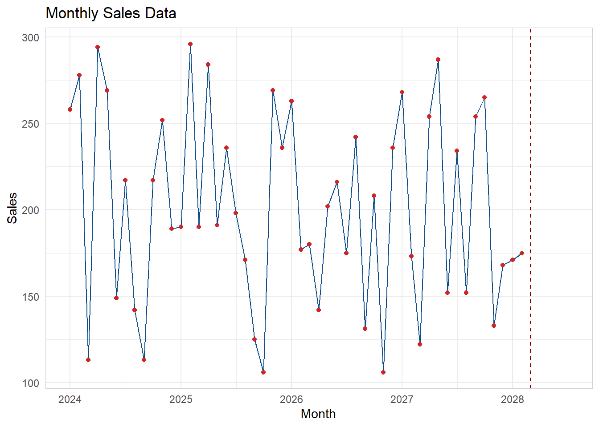
Demand Forecasting Models for Contraceptive Supply Chain
An introduction to time series forecasting
Harsha Halgamuwe Hewage
Data Lab for Social Good Research Lab
Cardiff University, UK
2025-03-17
Self-Assessment

Assumptions
- You should be comfortable with R and Python coding.
- This is not a theory-based course—we will not derive formulas or mathematical proofs.
- Our focus is on practical time series forecasting: understanding when and how to use different tools effectively.
What we will cover
- Data wrangling and basic feature engineering
- Time series visualizations
- Traditional forecasting models
- Advanced forecasting models
- Performance evaluation
What we will not cover
- Handling missing values
- Advanced feature engineering
- Time series cross-validation
- Hyperparameter tuning
Materials
You can find the workshop materials here.
Note: These materials are based on A Novel Hybrid Approach to Contraceptive Demand Forecasting Research, F4SG: Africast training and F4SG Learning Labs trainings.
Recommended readings:
- Demand forecasting for executives and professionals by Bahman Rostami-Tabar, Enno Siemsen, and Stephan Kolassa.
- Forecasting: Principles and Practice (3rd ed) by Rob J Hyndman and George Athanasopoulos.
- Forecasting and Analytics with the Augmented Dynamic Adaptive Model (ADAM) by Ivan Svetunkov.
Outline
- What is forecasting?
- Prepare your data
- Explore your data
- Forecast modelling
- Evaluating the model performances
- Advance forecasting models
- Other forecasting models in family planning supply chains
What is forecasting?
What is a FORECAST?
An estimation of the future based on all of the information available at the time when we generate the forecast;
- historical data,
- knowledge of any future events that might impact the forecasts.
What is time series data?
- Time series consist of sequences of observations collected over time.
- Time series forecasting is estimating how the sequence of observations will continue into the future.
What to FORECAST?
Understanding needs! Identify decisions that need forecasting support!
- Forecast variable/s
- Time granularity
- Forecast horizon
- Frequency
- Structure/hierarchy
Forecasting workflow
- Step 1: Problem definition
- Step 2: Gathering information
- Step 3: Preliminary (exploratory) analysis
- Step 4: Choosing and fitting models
- Step 5: Evaluating and using a forecasting model
Tidy forecasting workflow
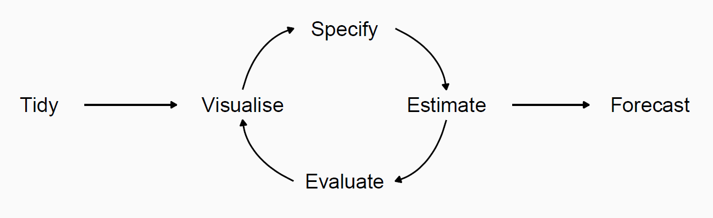
Read more at Demand forecasting for executives and professionals by Bahman Rostami-Tabar, Enno Siemsen, and Stephan Kolassa.
Forecasting using R
Loading libraries
We use the fpp3 package in this workshop, which provides all the necessary packages for data manipulation, plotting, and forecasting.
# Define required packages
packages <- c("tidyverse", "fable", "tsibble", "feasts", 'zoo')
# Install missing packages
missing_packages <- packages[!(packages %in% installed.packages()[,"Package"])]
if(length(missing_packages)) {
suppressWarnings(suppressMessages(install.packages(missing_packages)))
}
# Load libraries quietly
suppressWarnings(suppressMessages({
library(tidyverse) # Data manipulation and plotting functions
library(fable) # Time series manipulation
library(tsibble) # Forecasting functions
library(feasts) # Time series graphics and statistics
}))Read more at Forecasting: Principles and Practice (3rd ed) by Rob J Hyndman and George Athanasopoulos.
Preparing the data
In this workshop, we are using tsibble objects. They provide a data infrastructure for tidy temporal data with wrangling tools, adapting the tidy data principles.
In tsibble:
- Index: time information about the observation
- Measured variable(s): numbers of interest
- Key variable(s): set of variables that define observational units over time
- It works with tidyverse functions.
Read csv file
med_qty <- read.csv('data/med_qty.csv')
med_qty |> head(10) date hub_id product_id quantity_issued
1 2017 Jul hub_4 product_1 60
2 2017 Jul hub_4 product_6 5200
3 2017 Jul hub_7 product_1 8
4 2017 Jul hub_7 product_5 120
5 2017 Jul hub_8 product_7 10
6 2017 Jul hub_10 product_1 343
7 2017 Jul hub_10 product_2 53
8 2017 Jul hub_10 product_3 26
9 2017 Jul hub_10 product_4 1710
10 2017 Jul hub_10 product_5 1340Do you think the med_qty data set is a tidy data?
Check for NA and duplicates
# check NAs
anyNA(med_qty)[1] FALSE#check duplicates
med_qty |>
duplicated() |>
sum() [1] 0Create tsibble
med_tsb <- med_qty |>
mutate(date = yearmonth(date)) |> # convert chr to date format
as_tsibble(index = date, key = c(hub_id, product_id))
med_tsb # A tsibble: 6,745 x 4 [1M]
# Key: hub_id, product_id [133]
date hub_id product_id quantity_issued
<mth> <chr> <chr> <dbl>
1 2017 Aug hub_1 product_1 721
2 2017 Sep hub_1 product_1 795
3 2017 Oct hub_1 product_1 1720
4 2017 Nov hub_1 product_1 911
5 2017 Dec hub_1 product_1 314
6 2018 Jan hub_1 product_1 6913
7 2018 Feb hub_1 product_1 2988
8 2018 Mar hub_1 product_1 7120
9 2018 Apr hub_1 product_1 3122
10 2018 May hub_1 product_1 11737
# ℹ 6,735 more rows- What is the temporal granularity of
med_tsb? - How many time series do we have in
med_tsb?
Check temporal gaps (implicit missing values)
has_gaps(med_tsb) |> head(3) #check gaps# A tibble: 3 × 3
hub_id product_id .gaps
<chr> <chr> <lgl>
1 hub_1 product_1 TRUE
2 hub_1 product_2 TRUE
3 hub_1 product_3 TRUE scan_gaps(med_tsb) |> head(3) # show gaps# A tsibble: 3 x 3 [1M]
# Key: hub_id, product_id [1]
hub_id product_id date
<chr> <chr> <mth>
1 hub_1 product_1 2018 Jul
2 hub_1 product_1 2018 Aug
3 hub_1 product_1 2018 Sepcount_gaps(med_tsb) |> head(3) # count gaps# A tibble: 3 × 5
hub_id product_id .from .to .n
<chr> <chr> <mth> <mth> <int>
1 hub_1 product_1 2018 Jul 2021 Feb 32
2 hub_1 product_1 2021 Jul 2022 Sep 15
3 hub_1 product_2 2018 Sep 2018 Sep 1Check temporal gaps (implicit missing values)
If there is any gap, then we fill it.
med_tsb |> fill_gaps(quantity_issued=0L) # we can fill it with zero# A tsibble: 8,795 x 4 [1M]
# Key: hub_id, product_id [133]
date hub_id product_id quantity_issued
<mth> <chr> <chr> <dbl>
1 2017 Aug hub_1 product_1 721
2 2017 Sep hub_1 product_1 795
3 2017 Oct hub_1 product_1 1720
4 2017 Nov hub_1 product_1 911
5 2017 Dec hub_1 product_1 314
6 2018 Jan hub_1 product_1 6913
7 2018 Feb hub_1 product_1 2988
8 2018 Mar hub_1 product_1 7120
9 2018 Apr hub_1 product_1 3122
10 2018 May hub_1 product_1 11737
# ℹ 8,785 more rowsCheck temporal gaps (implicit missing values)
Note: Since the main focus of this study is to provide foundational knowledge on forecasting, we will filter out time series with many missing values and then fill the remaining gaps using na.interp() function (Read more).
item_ids <- med_tsb |>
count_gaps() |>
group_by(hub_id, product_id) |>
summarise(.n = max(.n), .groups = 'drop') |>
filter(.n > 1) |>
mutate(id = paste0(hub_id,'-',product_id)) |>
pull(id) # filtering the item ids
med_tsb_filter <- med_tsb |>
mutate(id = paste0(hub_id,'-',product_id)) |>
group_by(hub_id, product_id) |>
mutate(num_observations = n()) |>
filter(!id %in% item_ids & num_observations >59) |> # we have cold starts and discontinuations.
fill_gaps(quantity_issued = 1e-6, .full = TRUE) |> # Replace NAs with a small value
select(-id, -num_observations) |>
mutate(quantity_issued = if_else(is.na(quantity_issued),
exp(
forecast::na.interp(
ts(log(quantity_issued), frequency = 12))),
quantity_issued))Data wrangaling using tsibble
We can use the filter() function to select rows.
med_tsb |>
filter(hub_id == 'hub_10') # A tsibble: 417 x 4 [1M]
# Key: hub_id, product_id [7]
date hub_id product_id quantity_issued
<mth> <chr> <chr> <dbl>
1 2017 Jul hub_10 product_1 343
2 2017 Aug hub_10 product_1 67
3 2017 Sep hub_10 product_1 127
4 2017 Oct hub_10 product_1 287
5 2017 Nov hub_10 product_1 759
6 2017 Dec hub_10 product_1 181
7 2018 Jan hub_10 product_1 7015
8 2018 Feb hub_10 product_1 840
9 2018 Mar hub_10 product_1 4111
10 2018 Apr hub_10 product_1 1910
# ℹ 407 more rowsData wrangaling using tsibble
We can use the select() function to select columns.
med_tsb |>
filter(hub_id == 'hub_10') |>
select(date, product_id, quantity_issued)# A tsibble: 417 x 3 [1M]
# Key: product_id [7]
date product_id quantity_issued
<mth> <chr> <dbl>
1 2017 Jul product_1 343
2 2017 Aug product_1 67
3 2017 Sep product_1 127
4 2017 Oct product_1 287
5 2017 Nov product_1 759
6 2017 Dec product_1 181
7 2018 Jan product_1 7015
8 2018 Feb product_1 840
9 2018 Mar product_1 4111
10 2018 Apr product_1 1910
# ℹ 407 more rowsData wrangaling using tsibble
We can use group_by() function to group over keys. We can use the summarise() function to summarise over keys.
med_tsb |>
group_by(product_id) |>
summarise(total_quantity_issued = sum(quantity_issued), .groups = 'drop')# A tsibble: 471 x 3 [1M]
# Key: product_id [7]
product_id date total_quantity_issued
<chr> <mth> <dbl>
1 product_1 2017 Jul 691
2 product_1 2017 Aug 18855
3 product_1 2017 Sep 21654
4 product_1 2017 Oct 16456
5 product_1 2017 Nov 19694
6 product_1 2017 Dec 63107
7 product_1 2018 Jan 66703
8 product_1 2018 Feb 53012
9 product_1 2018 Mar 82566
10 product_1 2018 Apr 56913
# ℹ 461 more rowsData wrangaling using tsibble
We can use the mutate() function to create new variables.
med_tsb |>
mutate(quarter = yearquarter(date))# A tsibble: 6,745 x 5 [1M]
# Key: hub_id, product_id [133]
date hub_id product_id quantity_issued quarter
<mth> <chr> <chr> <dbl> <qtr>
1 2017 Aug hub_1 product_1 721 2017 Q3
2 2017 Sep hub_1 product_1 795 2017 Q3
3 2017 Oct hub_1 product_1 1720 2017 Q4
4 2017 Nov hub_1 product_1 911 2017 Q4
5 2017 Dec hub_1 product_1 314 2017 Q4
6 2018 Jan hub_1 product_1 6913 2018 Q1
7 2018 Feb hub_1 product_1 2988 2018 Q1
8 2018 Mar hub_1 product_1 7120 2018 Q1
9 2018 Apr hub_1 product_1 3122 2018 Q2
10 2018 May hub_1 product_1 11737 2018 Q2
# ℹ 6,735 more rowsData wrangaling using tsibble
We can use index_by() function to group over index We can use the summarise() function to summarise over index.
med_tsb |>
mutate(quarter = yearquarter(date)) |>
index_by(quarter) |>
summarise(total_quantity_issues = sum(quantity_issued))# A tsibble: 24 x 2 [1Q]
quarter total_quantity_issues
<qtr> <dbl>
1 2017 Q3 2103843
2 2017 Q4 2811202
3 2018 Q1 2511488
4 2018 Q2 3433726
5 2018 Q3 1738860
6 2018 Q4 2934886
7 2019 Q1 2452192
8 2019 Q2 1640048
9 2019 Q3 2170015
10 2019 Q4 3045525
# ℹ 14 more rowsNow it is your turn.
15:00
Explore your data
Time series patterns
Level: The level of a time series describes the center of the series.Trend: A trend describes predictable increases or decreases in the level of a series.Seasonal: Seasonality is a consistent pattern that repeats over a fixed cycle. pattern exists when a series is influenced by seasonal factors (e.g., the quarter of the year, the month, or day of the week).Cyclic: A pattern exists when data exhibit rises and falls that are not of fixed period (duration usually of at least 2 years).
Time series patterns
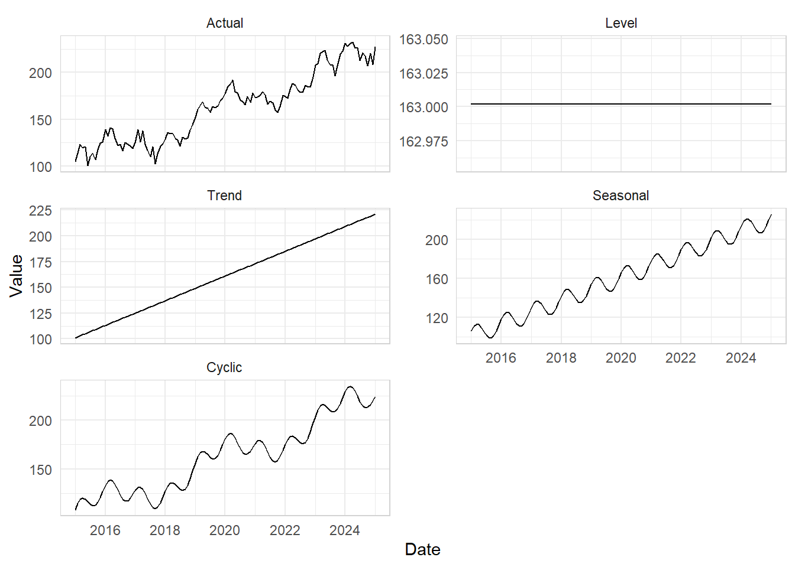
Read more at Demand forecasting for executives and professionals by Bahman Rostami-Tabar, Enno Siemsen, and Stephan Kolassa.
Additive vs. multiplicative seasonality
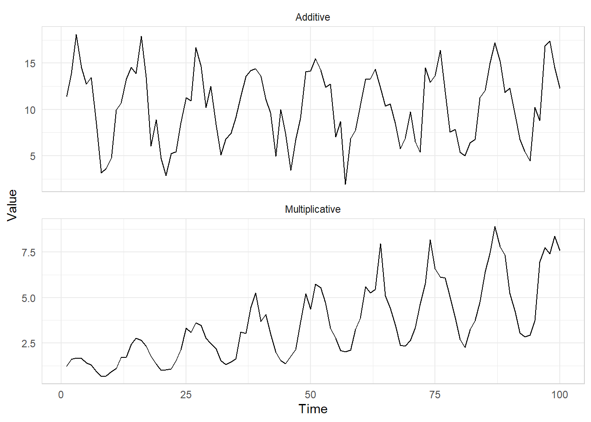
- When we have multiplicative seasonality, we can use transformations to convert multiplicative seasonality into additive seasonality.
- In this training, we are not discussing time series transformations. You can read more about it at Transformations and adjustments.
Time plots
You can create time plot using autoplot() function.
med_tsb_filter |>
filter(hub_id == 'hub_1' & product_id == 'product_2') |>
autoplot(quantity_issued) +
labs(
x = "Date",
y = "Quantity Issued"
) +
theme_minimal() +
theme(panel.border = element_rect(color = "lightgrey", fill = NA))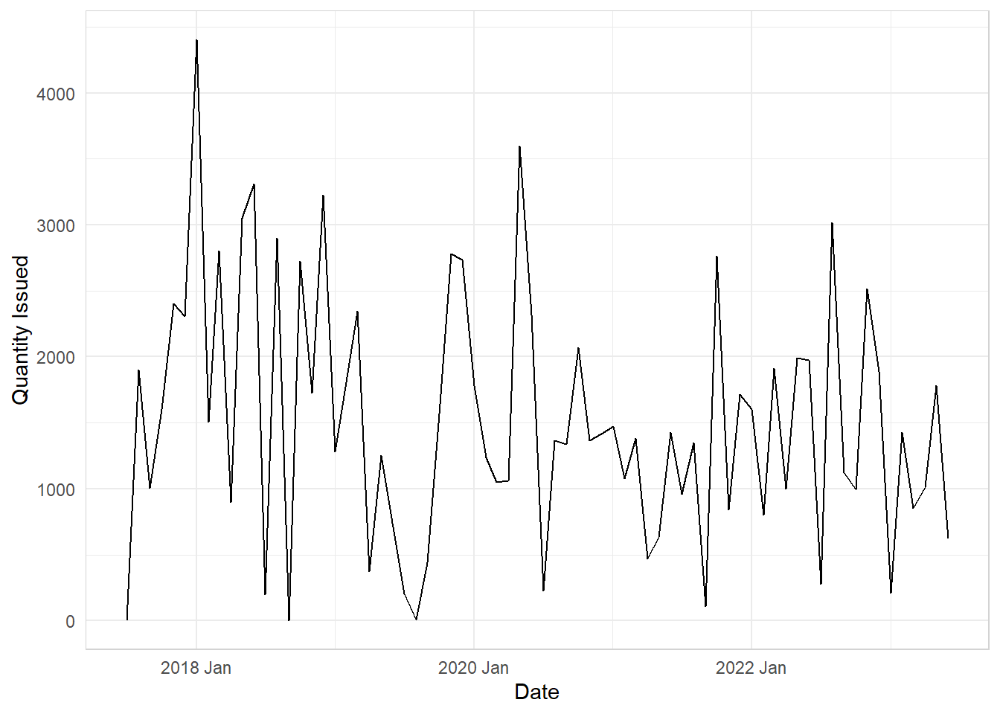
Are time plots best?
med_tsb_filter |>
mutate(id = paste0(hub_id, product_id)) |>
ggplot(aes(x = date, y = quantity_issued, group = id)) +
geom_line() +
labs(
x = "Date",
y = "Quantity Issued"
) +
theme_minimal() +
theme(legend.position = "none",
panel.border = element_rect(color = "lightgrey", fill = NA))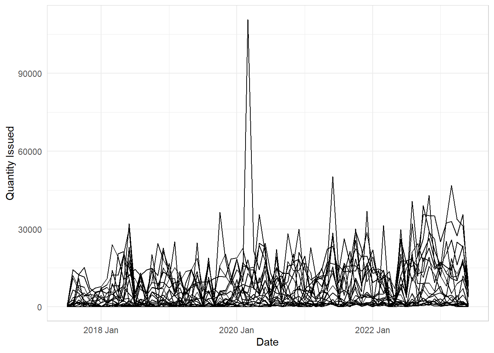
Seasonal plots
- Data plotted against the individual
seasonsin which the data were observed (In this case a “season” is a month). - Enables the underlying seasonal pattern to be seen more clearly, and also allows any substantial departures from the seasonal pattern to be easily identified.
- You can create seasonal plots using
gg_season()function.
Seasonal plots
med_tsb_filter |>
filter(hub_id == 'hub_14' & product_id == 'product_5') |>
gg_season(quantity_issued, labels = "both") +
ylab("Quantity issued") +
ggtitle("Seasonal plot") +
theme_minimal() +
theme(panel.border = element_rect(color = "lightgrey", fill = NA))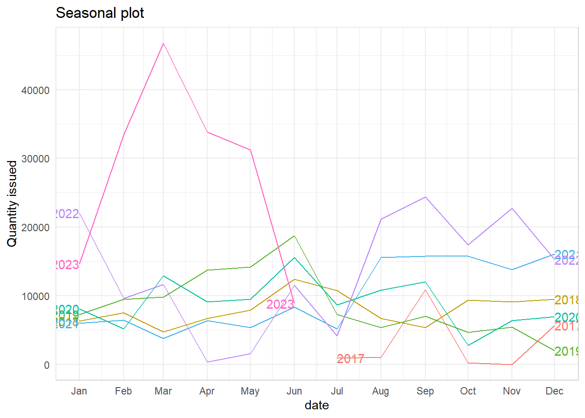
Seasonal sub series plots
- Data for each season collected together in time plot as separate time series.
- Enables the underlying seasonal pattern to be seen clearly, and changes in seasonality over time to be visualized.
- You can create seasonal sub series plots using
gg_subseries()function.
Seasonal sub series plots
med_tsb_filter |>
filter(hub_id == 'hub_14' & product_id == 'product_5') |>
gg_subseries(quantity_issued) +
ylab("Quantity issued") +
ggtitle("Seasonal sub series plot") +
theme_minimal() +
theme(axis.text.x = element_text(angle = 90, hjust = 1),
panel.border = element_rect(color = "lightgrey", fill = NA))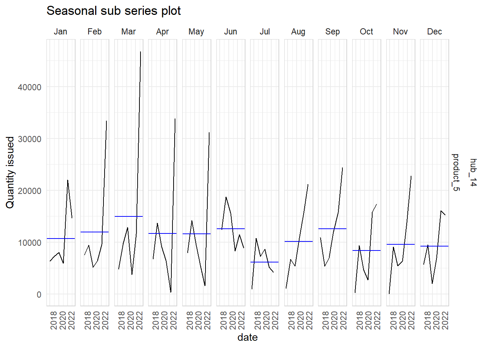
Strength of seasonality and trend
- We used STL decomposition for additive decompositions.
- A multiplicative decomposition can be obtained by first taking logs of the data, then back-transforming the components.
- Decompositions that are between additive and multiplicative can be obtained using a Box-Cox transformation of the data.
- Read more at STL decomposition.
Strength of seasonality and trend
STL Decomposition
\[ y_t = T_t + S_t + R_t \]
Seasonal Strength
\[ \max \left( 0, 1 - \frac{\text{Var}(R_t)}{\text{Var}(S_t + R_t)} \right) \]
Trend Strength
\[ \max \left( 0, 1 - \frac{\text{Var}(R_t)}{\text{Var}(T_t + R_t)} \right) \]
Feature extraction and statistics
We can use features() function to extract the strength of trend and seasonality.
med_tsb_filter |>
features(quantity_issued, feat_stl)# A tibble: 21 × 11
hub_id product_id trend_strength seasonal_strength_year seasonal_peak_year
<chr> <chr> <dbl> <dbl> <dbl>
1 hub_1 product_2 0.261 0.503 6
2 hub_1 product_5 0.250 0.438 0
3 hub_10 product_5 0.366 0.0911 0
4 hub_11 product_2 0.624 0.407 11
5 hub_11 product_5 0.352 0.244 4
6 hub_11 product_7 0.181 0.196 7
7 hub_13 product_5 0.196 0.402 0
8 hub_14 product_5 0.595 0.229 9
9 hub_16 product_2 0.233 0.238 7
10 hub_16 product_5 0.416 0.272 0
# ℹ 11 more rows
# ℹ 6 more variables: seasonal_trough_year <dbl>, spikiness <dbl>,
# linearity <dbl>, curvature <dbl>, stl_e_acf1 <dbl>, stl_e_acf10 <dbl>Feature extraction and statistics
med_tsb_filter |>
features(quantity_issued, feat_stl) |>
ggplot(aes(x = trend_strength, y = seasonal_strength_year, shape = product_id)) +
geom_point(size = 2) +
ylab("Seasonal strength") +
xlab("Trend strength") +
theme_minimal() +
theme(panel.border = element_rect(color = "lightgrey", fill = NA))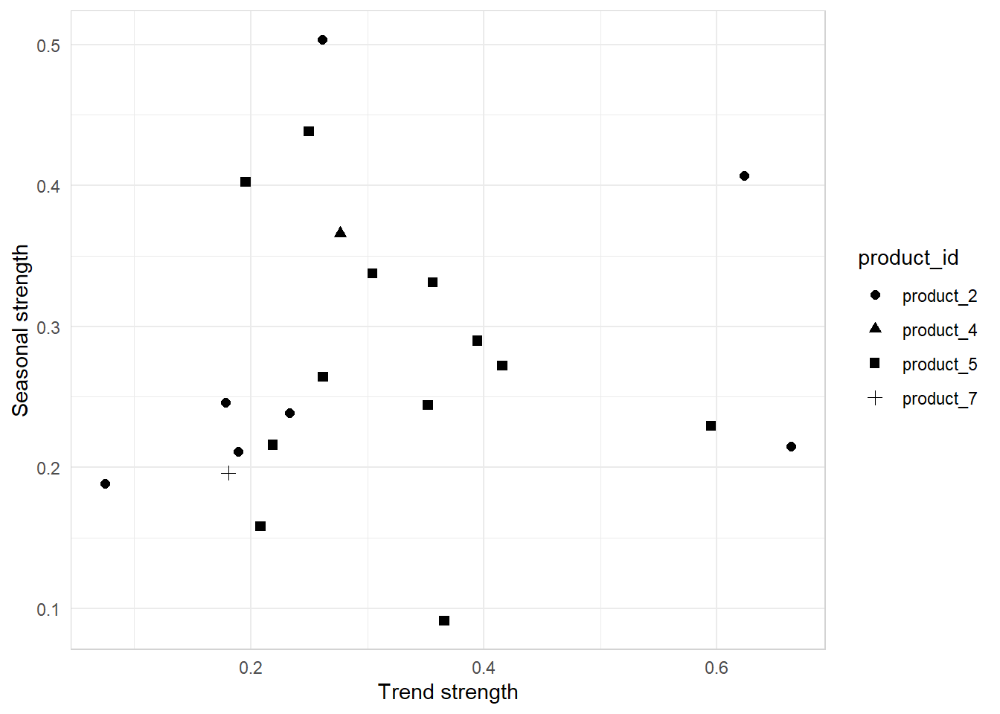
Lag plots and autocorrelation
- Each graph shows \(y_t\) plotted against \(y_{t-k}\) for different values of \(k\).
- The
autocorrelationsare the correlations associated with these scatterplots: \(\text{Corr}(y_t, y_{t-k})\) - You can create lag plots using
gglag()function. - These values indicate the relationship between current and past observations in a time series.
Lag plots and autocorrelation
med_tsb_filter |>
filter(hub_id == 'hub_14' & product_id == 'product_5') |>
gg_lag(quantity_issued, lags = 1:12, geom='point') +
ylab("Quantity issued") +
xlab("Lag (Quantity issued, n)") +
theme_minimal() +
theme(axis.text.x = element_text(angle = 90, hjust = 1),
panel.border = element_rect(color = "lightgrey", fill = NA))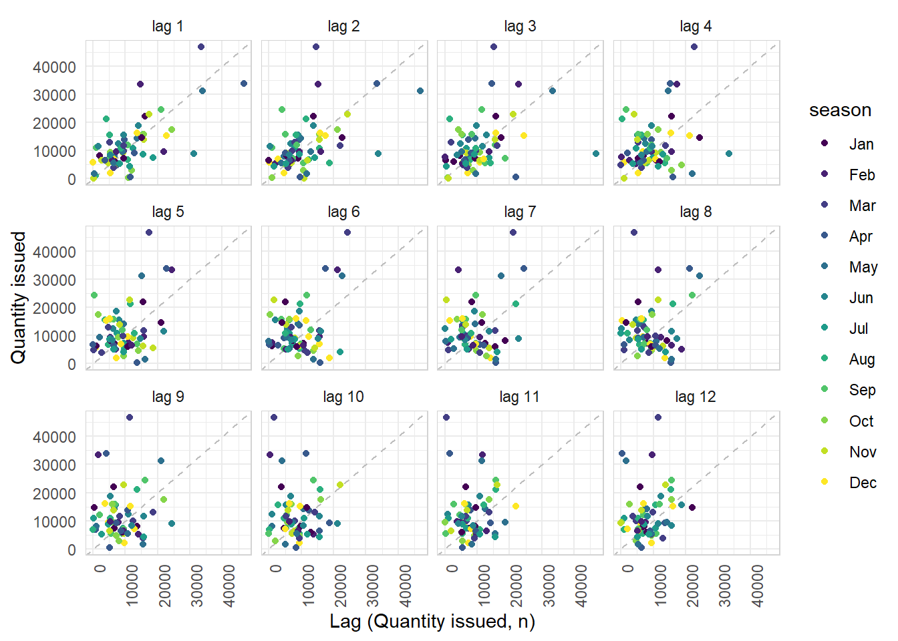
Autocorrelation
Autocovarianceandautocorrelation: measure linear relationship betweenlagged valuesof a time series y.- We denote the
sample autocovarianceat lag \(k\) by \(c_k\) and thesample autocorrelationat lag \(k\) by \(r_k\). Then, we define:
\(c_k = \frac{1}{T} \sum_{t=k+1}^{T} (y_t - \bar{y})(y_{t-k} - \bar{y})\)
\(r_k = \frac{c_k}{c_0}\)
where \(c_0\) is the variance of the time series.
- \(r_1\) indicates how successive values of \(y\) relate to each other.
- \(r_2\) indicates how \(y\) values two periods apart relate to each other.
- \(r_k\) is almost the same as the
sample correlationbetween \(y_t\) and \(y_{t-k}\).
Autocorrelation
med_tsb_filter |>
filter(hub_id == 'hub_14' & product_id == 'product_5') |>
ACF(quantity_issued, lag_max = 24)# A tsibble: 24 x 4 [1M]
# Key: hub_id, product_id [1]
hub_id product_id lag acf
<chr> <chr> <cf_lag> <dbl>
1 hub_14 product_5 1M 0.681
2 hub_14 product_5 2M 0.485
3 hub_14 product_5 3M 0.320
4 hub_14 product_5 4M 0.160
5 hub_14 product_5 5M 0.195
6 hub_14 product_5 6M 0.162
7 hub_14 product_5 7M 0.0956
8 hub_14 product_5 8M 0.0540
9 hub_14 product_5 9M 0.00739
10 hub_14 product_5 10M -0.0665
# ℹ 14 more rowsAutocorrelation
med_tsb_filter |>
filter(hub_id == 'hub_14' & product_id == 'product_5') |>
ACF(quantity_issued, lag_max = 36) |>
autoplot() +
theme_minimal() +
theme(panel.border = element_rect(color = "lightgrey", fill = NA))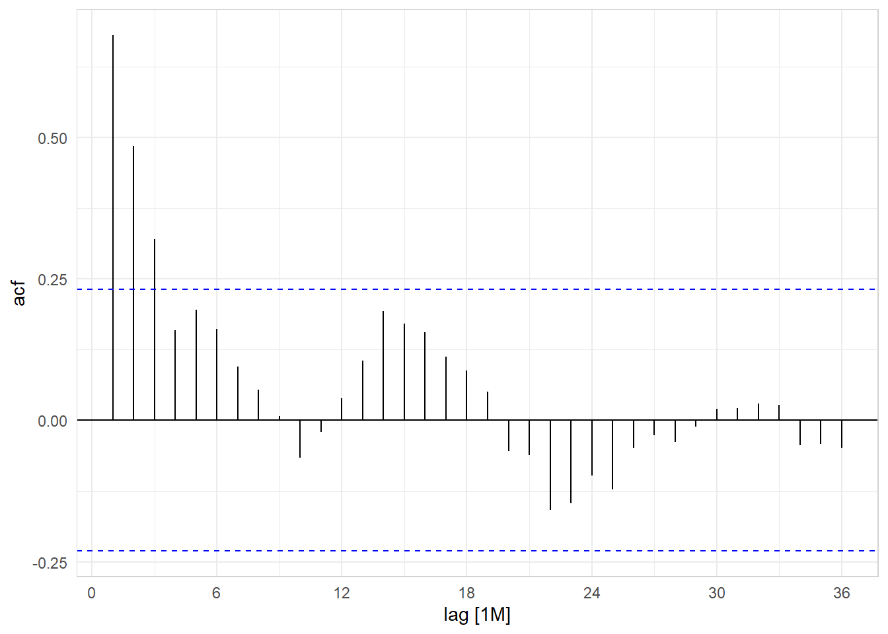
What autocorrelation will tell us? Which key features could be highlighted by ACF?
Autocorrelation
- When data have a trend, the autocorrelations for small lags tend to be large and positive.
- When data are seasonal, the autocorrelations will be larger at the seasonal lags (i.e., at multiples of the seasonal frequency)
- When data are trended and seasonal, you see a combination of these effects.
Now it is your turn.
15:00
Forecast modelling
Naive
Simplest forecasting method using last observation as forecast.
\(\hat{y}_{t+h|t} = y_t\)
Assumptions
- No systematic pattern in data
- Recent observations are most relevant
Strengths & Weaknesses
✓ Simple benchmark model
✓ Requires no computation
✗ Ignores all patterns
✗ Poor for trending/seasonal data
Naive
We use NAIVE() function and model() function to build the Naive model.
med_tsb_filter |>
filter(hub_id == 'hub_1' & product_id == 'product_5') |>
model(naive = NAIVE(quantity_issued)) |>
forecast(h = 12) |>
autoplot(med_tsb_filter |>
filter(hub_id == 'hub_1' & product_id == 'product_5'), level = NULL) +
labs(y = "Quantity issued", x = "Date") +
theme_minimal() +
theme(panel.border = element_rect(color = "lightgrey", fill = NA))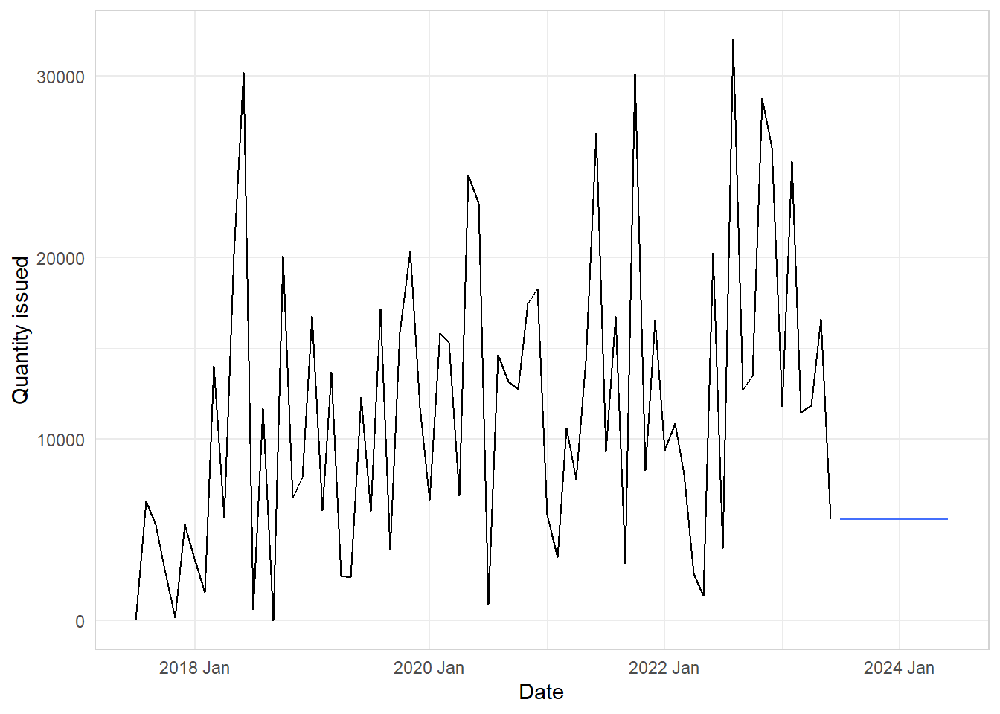
Seasonal NAIVE (sNAIVE)
\(y_{t+h \mid t} = y_{t+h - m(k+1)}\)
Where: \(m\) = seasonal period and \(k = \lfloor \frac{h-1}{m} \rfloor\)
Assumptions
- Seasonal pattern is stable
- No trend present
Strengths & Weaknesses
✓ Handles strong seasonality
✓ Simple interpretation
✗ Fails with changing seasonality
✗ Ignores non-seasonal patterns
sNaive
med_tsb_filter |>
filter(hub_id == 'hub_1' & product_id == 'product_5') |>
model(snaive = SNAIVE(quantity_issued ~ lag("year"))) |>
forecast(h = 12) |>
autoplot(med_tsb_filter |>
filter(hub_id == 'hub_1' & product_id == 'product_5'), level = NULL) +
labs(y = "Quantity issued", x = "Date") +
theme_minimal() +
theme(panel.border = element_rect(color = "lightgrey", fill = NA))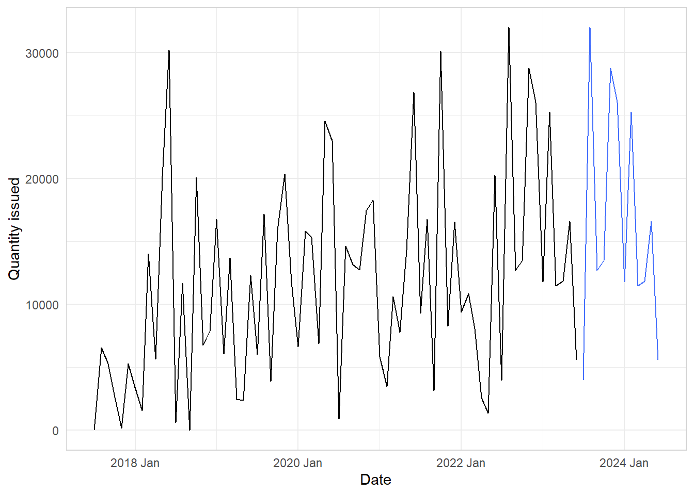
Mean
Uses the historical average of all observations as forecast.
\(y_{t+h \mid t} = \bar{y} = \frac{1}{t} \sum_{i=1}^{t} y_i\)
Where: \(t\) is the number of past observations used for the forecast.
Assumptions
- Series is stationary
- Short-term fluctuations are noise
Strengths & Weaknesses
✓ Effective noise reduction
✓ Simple to implement
✗ Ignores all patterns
✗ Lags behind trends
Mean
med_tsb_filter |>
filter(hub_id == 'hub_1' & product_id == 'product_5') |>
model(MEAN(quantity_issued ~ window(size = 3))) |>
forecast(h = 12) |>
autoplot(med_tsb_filter |>
filter(hub_id == 'hub_1' & product_id == 'product_5'), level = NULL) +
labs(y = "Quantity issued", x = "Date") +
theme_minimal() +
theme(panel.border = element_rect(color = "lightgrey", fill = NA))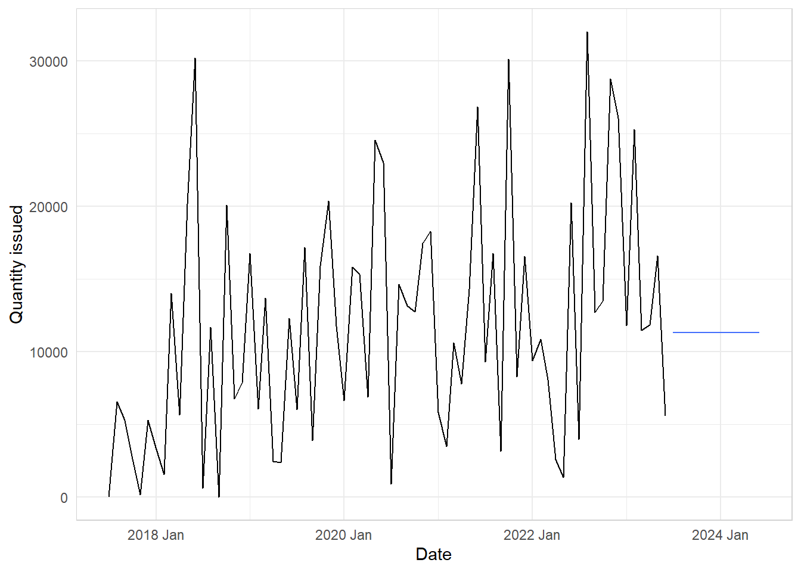
ARIMA
Combines Autoregressive (AR) and Moving Average (MA) components with differencing.
AR: autoregressive (lagged observations as inputs)I: integrated (differencing to make series stationary)MA: moving average (lagged errors as inputs)
The ARIMA model is given by:
\((1 - \phi_1 B - \dots - \phi_p B^p)(1 - B)^d y_t = c + (1 + \theta_1 B + \dots + \theta_q B^q) \epsilon_t\)
Where: \(B\): Backshift operator, \(\phi\): AR coefficients, \(\theta\): MA coefficients, \(d\): Differencing order, \(p\): AR order, \(q\): MA order and \(\epsilon_t\): White noise
ARIMA
Assumptions
- Series is stationary
- Linear relationship between past values and errors
- White noise errors
- No missing values in series
Strengths & Weaknesses
✓ Flexible for various time series patterns
✓ Perform well for short term horizons
✗ Requires stationarity for optimal performance
✗ The parameters are often not easily interpretable in terms of trend or seasonality
ARIMA
A stationary series is:
- roughly horizontal
- constant variance
- no patterns predictable in the long-term
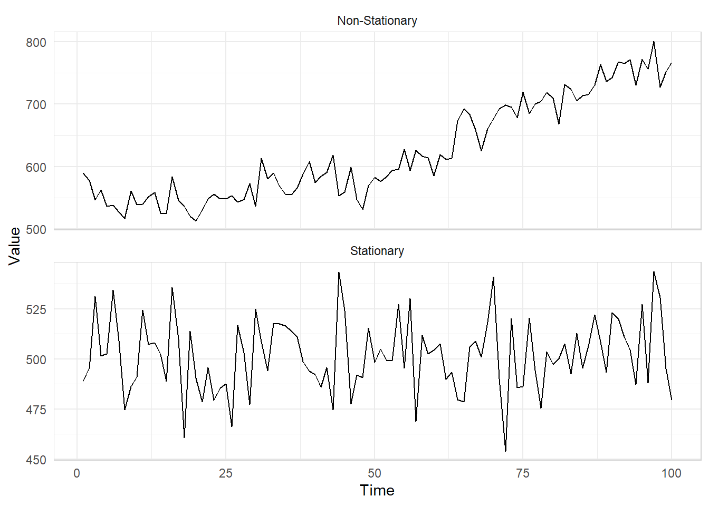
Seasonal ARIMA models
| ARIMA | \(~\underbrace{(p, d, q)}\) | \(\underbrace{(P, D, Q)_{m}}\) |
|---|---|---|
| \({\uparrow}\) | \({\uparrow}\) | |
| Non-seasonal part | Seasonal part of | |
| of the model | of the model |
- \(m\): number of observations per year.
- \(d\): first differences, \(D\): seasonal differences
- \(p\): AR lags, \(q\): MA lags
- \(P\): seasonal AR lags, \(Q\): seasonal MA lags
Seasonal and non-seasonal terms combine multiplicatively.
ARIMA automatic modelling
- Plot the data. Identify any unusual observations.
- If necessary, transform the data (e.g., Box-Cox transformation) to stabilize the variance.
- Use
ARIMA()to automatically select a model. - Check the residuals from your chosen model and if they do not look like white noise, try a modified model.
- Once the residuals look like white noise, calculate forecasts.
ARIMA automatic modelling
med_tsb_filter |>
filter(hub_id == 'hub_1' & product_id == 'product_5') |>
model(ARIMA(quantity_issued)) |>
forecast(h = 12) |>
autoplot(med_tsb_filter |>
filter(hub_id == 'hub_1' & product_id == 'product_5'), level = NULL) +
labs(y = "Quantity issued", x = "Date") +
theme_minimal() +
theme(panel.border = element_rect(color = "lightgrey", fill = NA))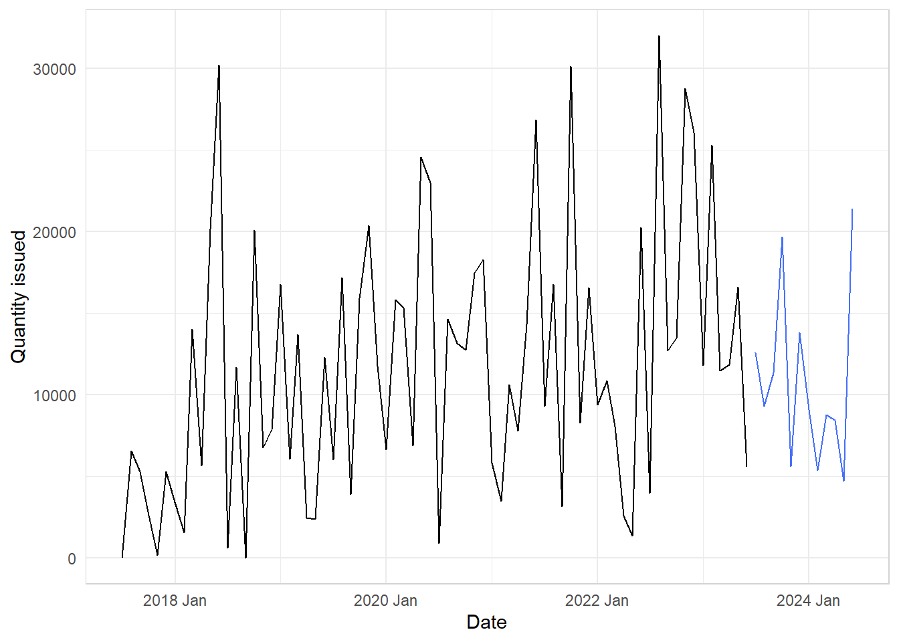
ETS
ETS stands for Exponential Smoothing and is based on a state space framework that decomposes a time series into three components:
| General Notation | E T S | ExponenTial Smoothing |
|
|---|---|---|---|
| ↗ | ↑ | ↖ | |
Error |
Trend |
Season |
Error: Additive ("A") or multiplicative ("M")Trend: None ("N"), additive ("A"), multiplicative ("M"), or damped ("Ad"or"Md").Seasonality: None ("N"), additive ("A") or multiplicative ("M")
For example, ETS(A,N,N) is the simple exponential smoothing model (no trend or seasonality) with additive errors.
ETS
How do we combine these elements?
Additively?
\(y_t = \ell_{t-1} + b_{t-1} + s_{t-m} + \varepsilon_t\)
Multiplicatively?
\(y_t = \ell_{t-1}b_{t-1}s_{t-m}(1 + \varepsilon_t)\)
Perhaps a mix of both?
\(y_t = (\ell_{t-1} + b_{t-1}) s_{t-m} + \varepsilon_t\)
ETS
How do the level, trend and seasonal components evolve over time?
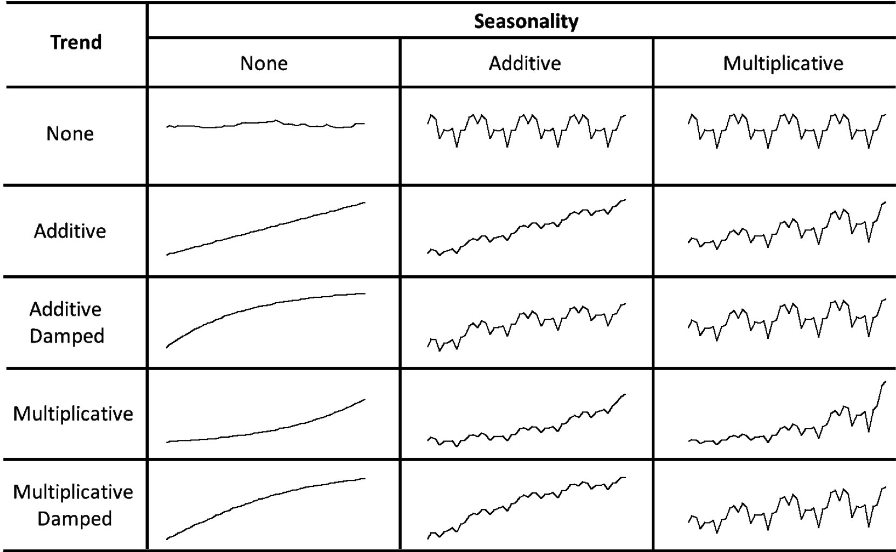
ETS
Assumptions
- Decomposable patterns
- Recent observations more important
- Consistent error structure (additive/multiplicative)
Strengths & Weaknesses
✓ They can be adapted to various data characteristics with different error, trend, and seasonal formulations
✓ Often very effective when the underlying components are stable
✗ Parameter estimates (including smoothing parameters and initial states) can affect the forecasts
✗ May struggle to capture sudden shifts or non-standard patterns if the smoothing parameters are constant
ETS automatic modelling
- Apply each model that is appropriate to the data.
- Optimize parameters and initial values using MLE (or some other criterion).
- Select best method using AICc.
- Use
ETS()to automatically select a model. - Produce forecasts using best method.
ETS automatic modelling
med_tsb_filter |>
filter(hub_id == 'hub_1' & product_id == 'product_5') |>
model(ETS(quantity_issued)) |>
forecast(h = 12) |>
autoplot(med_tsb_filter |>
filter(hub_id == 'hub_1' & product_id == 'product_5'), level = NULL) +
labs(y = "Quantity issued", x = "Date") +
theme_minimal() +
theme(panel.border = element_rect(color = "lightgrey", fill = NA))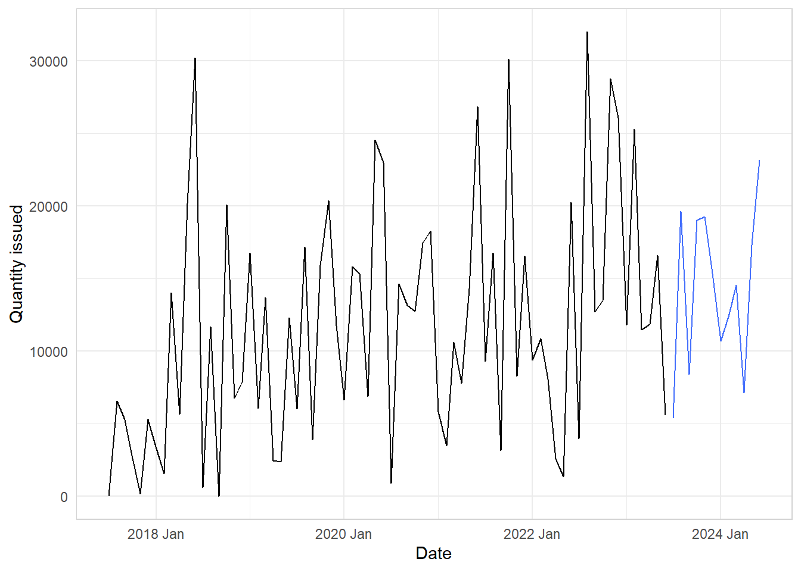
Model fitting in Fable
- The
model()function trains models on data. - It returns a
mableobject. - A
mableis a model table, each cell corresponds to a fitted model.
# Fit the models
fit_all <- med_tsb_filter |>
filter(hub_id == 'hub_1' & product_id == 'product_5') |>
model(
naive = NAIVE(quantity_issued),
snaive = SNAIVE(quantity_issued ~ lag('year')),
mean = MEAN(quantity_issued ~ window(size = 3)),
arima = ARIMA(quantity_issued),
ets = ETS(quantity_issued)
)
fit_all# A mable: 1 x 7
# Key: hub_id, product_id [1]
hub_id product_id naive snaive mean arima
<chr> <chr> <model> <model> <model> <model>
1 hub_1 product_5 <NAIVE> <SNAIVE> <MEAN> <ARIMA(0,1,1)(0,0,2)[12]>
# ℹ 1 more variable: ets <model>Extract information from mable
fit_all |> select(snaive) |> report()
fit_all |> tidy()
fit_all |> glance()- The
report()function gives a formatted model-specific display. - The
tidy()function is used to extract the coefficients from the models. - We can extract information about some specific model using the
filter()andselect()functions.
Producing forecasts
- The
forecast()function is used to produce forecasts from estimated models. hcan be specified with:- a number (the number of future observations)
- natural language (the length of time to predict)
- provide a dataset of future time periods
Producing forecasts
fit_all_fc <- fit_all |>
forecast(h = 'year')
#h = "year" is equivalent to setting h = 12.
fit_all_fc# A fable: 60 x 6 [1M]
# Key: hub_id, product_id, .model [5]
hub_id product_id .model date
<chr> <chr> <chr> <mth>
1 hub_1 product_5 naive 2023 Jul
2 hub_1 product_5 naive 2023 Aug
3 hub_1 product_5 naive 2023 Sep
4 hub_1 product_5 naive 2023 Oct
5 hub_1 product_5 naive 2023 Nov
6 hub_1 product_5 naive 2023 Dec
7 hub_1 product_5 naive 2024 Jan
8 hub_1 product_5 naive 2024 Feb
9 hub_1 product_5 naive 2024 Mar
10 hub_1 product_5 naive 2024 Apr
# ℹ 50 more rows
# ℹ 2 more variables: quantity_issued <dist>, .mean <dbl>Visualising forecasts
fit_all_fc |>
autoplot(level = NULL) +
autolayer(med_tsb_filter |>
filter_index("2022 JAn" ~ .) |>
filter(hub_id == 'hub_1' & product_id == 'product_5'), color = 'black') +
labs(title = "Forecasts for monthly quantity issued", y = "Quantity issued", x = "Date") +
theme_minimal() +
theme(panel.border = element_rect(color = "lightgrey", fill = NA)) +
guides(colour=guide_legend(title="Forecast"))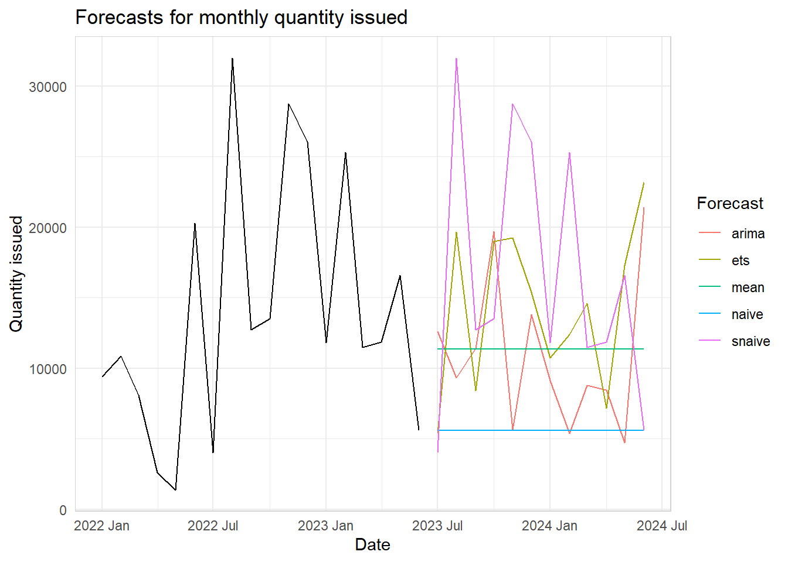
Now it is your turn.
15:00
What is wrong with point forecasts?
A point forecast is a single-value prediction representing the most likely future outcome, based on current data and models.
The disadvantage of point forecast;
✗ It ignores additional information in future.
✗ It does not explain uncertainties around future.
✗ It can not deal with assymmetric.
Types of probabilistic forecasts
Interval forecasts: A prediction interval is an interval within which power generation may lie, with a certain probability.
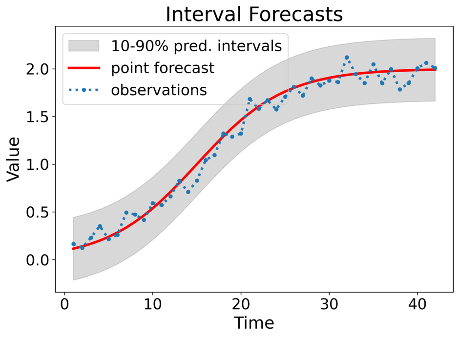
Types of probabilistic forecasts
Quantile forecasts: A quantile forecast provides a value that the future observation is expected to be below with a specified probability.
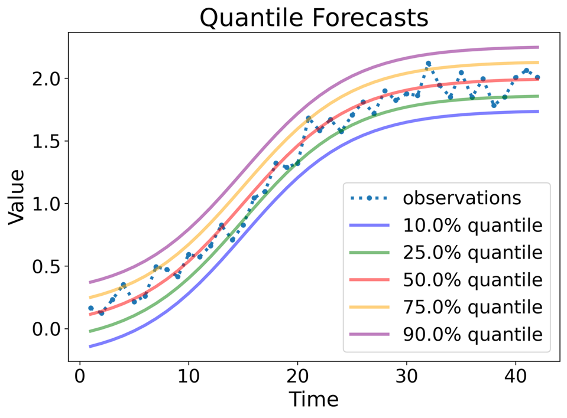
Types of probabilistic forecasts
Distribution forecasts: A comprehensive probabilistic forecast capturing the full range of potential outcomes across all time horizons.
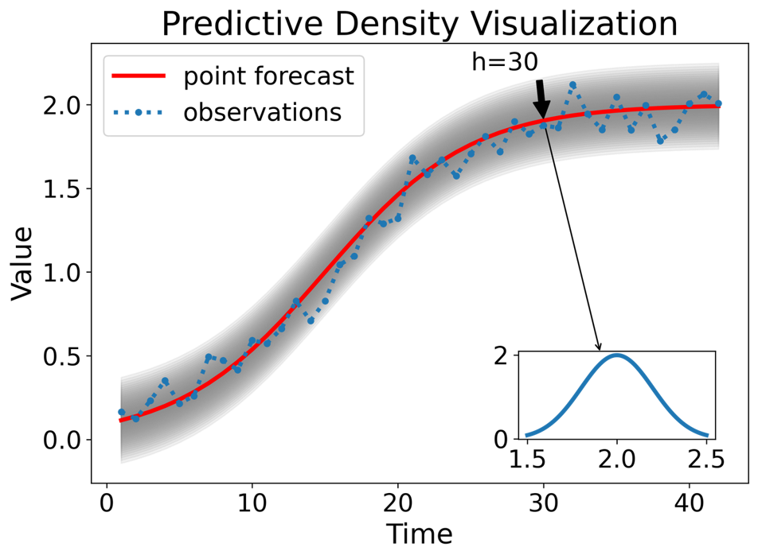
Types of probabilistic forecasts
Scenario forecasts: A spectrum of potential futures derived from probabilistic modeling to inform decision- making under uncertainty.
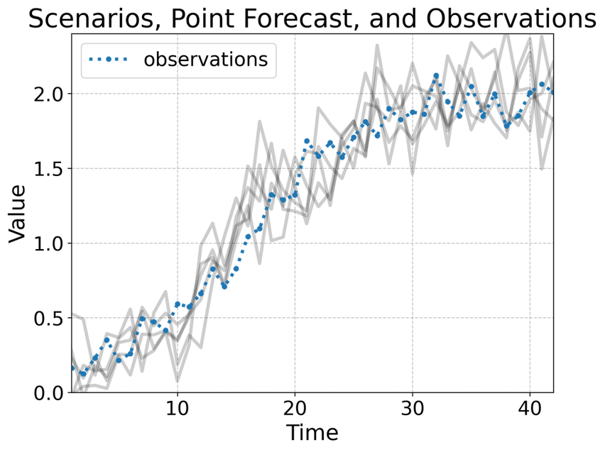
Forecast distributions from bootstrapping
When a normal distribution for the residuals is an unreasonable assumption, one alternative is to use bootstrapping, which only assumes that the residuals are uncorrelated with constant variance.
- A one-step forecast error is defined as
\(e_t = y_t - \hat{y}_{t|t-1}\), \(y_t = \hat{y}_{t|t-1} + e_t\)
- So we can simulate the next observation of a time series using
\(y_{T+1} = \hat{y}_{T+1|T} + e_{T+1}\)
- Adding the new simulated observation to our data set, we can repeat the process to obtain
\(y_{T+2} = \hat{y}_{T+2|T+1} + e_{T+2}\)
Generate different futures forecast
med_tsb_filter |>
filter(hub_id == 'hub_1' & product_id == 'product_5') |>
model(snaive = SNAIVE(quantity_issued ~ lag("year"))) |>
generate(h = 12, bootstrap = TRUE, times = 5)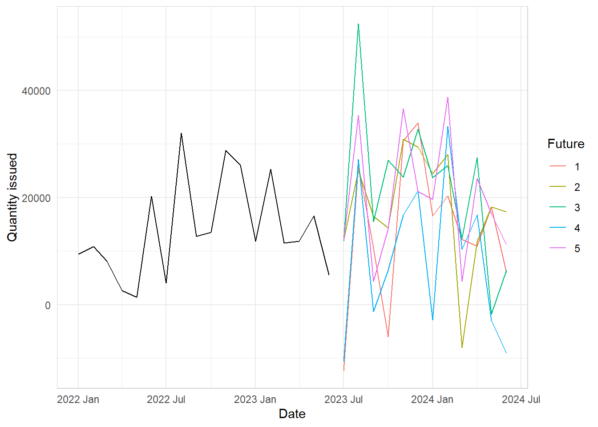
Generate probabilistic forecast
med_tsb_filter |>
filter(hub_id == 'hub_1' & product_id == 'product_5') |>
model(snaive = SNAIVE(quantity_issued ~ lag("year"))) |>
forecast(h = 12, bootstrap = TRUE, times = 1000)# A fable: 12 x 6 [1M]
# Key: hub_id, product_id, .model [1]
hub_id product_id .model date quantity_issued .mean
<chr> <chr> <chr> <mth> <dist> <dbl>
1 hub_1 product_5 snaive 2023 Jul sample[1000] 3790.
2 hub_1 product_5 snaive 2023 Aug sample[1000] 32090.
3 hub_1 product_5 snaive 2023 Sep sample[1000] 13039.
4 hub_1 product_5 snaive 2023 Oct sample[1000] 13203.
5 hub_1 product_5 snaive 2023 Nov sample[1000] 28567.
6 hub_1 product_5 snaive 2023 Dec sample[1000] 26470.
7 hub_1 product_5 snaive 2024 Jan sample[1000] 11766.
8 hub_1 product_5 snaive 2024 Feb sample[1000] 25393.
9 hub_1 product_5 snaive 2024 Mar sample[1000] 11540.
10 hub_1 product_5 snaive 2024 Apr sample[1000] 11942.
11 hub_1 product_5 snaive 2024 May sample[1000] 16975.
12 hub_1 product_5 snaive 2024 Jun sample[1000] 5496.Prediction intervals
Forecast intervals can be extracted using the hilo() function.
med_tsb_filter |>
filter(hub_id == 'hub_1' & product_id == 'product_5') |>
model(snaive = SNAIVE(quantity_issued ~ lag("year"))) |>
forecast(h = 12, bootstrap = TRUE, times = 1000) |>
hilo(level = 75) |>
unpack_hilo("75%")# A tsibble: 12 x 8 [1M]
# Key: hub_id, product_id, .model [1]
hub_id product_id .model date quantity_issued .mean `75%_lower`
<chr> <chr> <chr> <mth> <dist> <dbl> <dbl>
1 hub_1 product_5 snaive 2023 Jul sample[1000] 3509. -8015.
2 hub_1 product_5 snaive 2023 Aug sample[1000] 32690. 20230.
3 hub_1 product_5 snaive 2023 Sep sample[1000] 12713. 850.
4 hub_1 product_5 snaive 2023 Oct sample[1000] 13433. 1624.
5 hub_1 product_5 snaive 2023 Nov sample[1000] 29074. 16981.
6 hub_1 product_5 snaive 2023 Dec sample[1000] 25767. 14190.
7 hub_1 product_5 snaive 2024 Jan sample[1000] 11377. -48.1
8 hub_1 product_5 snaive 2024 Feb sample[1000] 25310. 13406.
9 hub_1 product_5 snaive 2024 Mar sample[1000] 11876. -410.
10 hub_1 product_5 snaive 2024 Apr sample[1000] 12137. -44.1
11 hub_1 product_5 snaive 2024 May sample[1000] 16901. 4829.
12 hub_1 product_5 snaive 2024 Jun sample[1000] 5407. -6448.
# ℹ 1 more variable: `75%_upper` <dbl>Now it is your turn.
15:00
Evaluating the model performances
Forecast accuracy evaluation using test sets
- We mimic the real life situation
- We pretend we don’t know some part of data (new data)
- It must not be used for
anyaspect of model training - Forecast accuracy is computed only based on the test set
Training and test sets
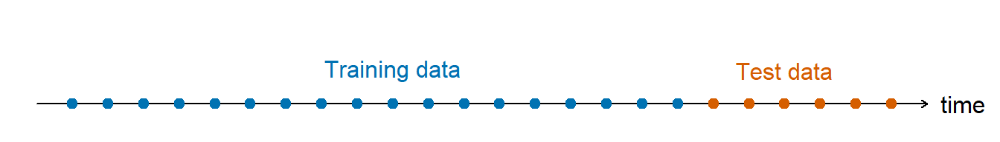
Evaluating point forecast accuracy
- In order to evaluate the performance of a forecasting model, we compute its forecast accuracy.
- Forecast accuracy is compared by measuring errors based on the test set.
- Ideally it should allow comparing benefits from improved accuracy with the cost of obtaining the improvement.
Evaluating point forecast accuracy
Forecast Error
\(e_{T+h} = y_{T+h} - \hat{y}_{T+h\mid T}\)
where
- \(y_{T+h}\) is the \((T+h)^\text{th}\) observation \((h=1,\dots,H)\), and
- \(\hat{y}_{T+h\mid T}\) is the forecast based on data up to time \(T\).
Read more on How to choose appropriate error measure by Ivan Svetunkov.
Evaluating point forecast accuracy
| Measure | Formula | Notes |
|---|---|---|
| MAE (Mean Absolute Error) |
\(\text{MAE} = \text{mean}(|e_{T+h}|)\) | Scale dependent |
| MSE (Mean Squared Error) |
\(\text{MSE} = \text{mean}(e_{T+h}^2)\) | Scale dependent |
| MAPE (Mean Absolute Percentage Error) |
\(\text{MAPE} = 100\,\text{mean}(|e_{T+h}|/|y_{T+h}|)\) | Scale independent; use if \(y_t \gg 0\) and \(y\) has a natural zero |
| RMSE (Root Mean Squared Error) |
\(\text{RMSE} = \sqrt{\text{mean}(e_{T+h}^2)}\) | Scale dependent |
Evaluating point forecast accuracy
| Measure | Formula | Notes |
|---|---|---|
| MASE (Mean Absolute Scaled Error) |
\(\text{MASE} = \text{mean}(|e_{T+h}|/Q)\) | Non-seasonal: \(Q = \frac{1}{T-1}\sum_{t=2}^T |y_t-y_{t-1}|\) Seasonal: \(Q = \frac{1}{T-m}\sum_{t=m+1}^T |y_t-y_{t-m}|\), where \(m\) is the seasonal frequency |
| RMSSE (Root Mean Squared Scaled Error) |
\(\text{RMSSE} = \sqrt{\text{mean}(e_{T+h}^2/Q)}\) | Non-seasonal: \(Q = \frac{1}{T-1}\sum_{t=2}^T (y_t-y_{t-1})^2\) Seasonal: \(Q = \frac{1}{T-m}\sum_{t=m+1}^T (y_t-y_{t-m})^2\), where \(m\) is the seasonal frequency |
Evaluating point forecast accuracy
Create train and test sets.
f_horizon <- 12 # forecast horizon
train <- med_tsb_filter |> # create train set
filter(hub_id == 'hub_1' & product_id == 'product_5') |>
filter_index(. ~ '2022 June')
fit_all <- train |> # model fitting
filter(hub_id == 'hub_1' & product_id == 'product_5') |>
model(
naive = NAIVE(quantity_issued),
snaive = SNAIVE(quantity_issued ~ lag('year')),
mean = MEAN(quantity_issued ~ window(size = 3)),
arima = ARIMA(quantity_issued),
ets = ETS(quantity_issued)
)
fit_all_fc <- fit_all |> # forecasting
forecast(h = f_horizon)Evaluating point forecast accuracy
fit_all_fc |>
accuracy(med_tsb_filter |>
filter(hub_id == 'hub_1' & product_id == 'product_5'),
measures = list(point_accuracy_measures))# A tibble: 5 × 12
.model hub_id product_id .type ME RMSE MAE MPE MAPE MASE RMSSE
<chr> <chr> <chr> <chr> <dbl> <dbl> <dbl> <dbl> <dbl> <dbl> <dbl>
1 arima hub_1 product_5 Test 5787. 10679. 8732. 5.08 59.3 1.23 1.21
2 ets hub_1 product_5 Test 5400. 11163. 8681. 5.33 57.0 1.23 1.27
3 mean hub_1 product_5 Test 8568. 12274. 9664. 29.9 54.3 1.37 1.39
4 naive hub_1 product_5 Test -3627. 9508. 8803. -76.1 94.1 1.24 1.08
5 snaive hub_1 product_5 Test 5237. 12571. 11346. -1.06 85.6 1.60 1.43
# ℹ 1 more variable: ACF1 <dbl>Evaluating probabilistic forecast accuracy
Coverage
- Measures how often the true value falls within a prediction interval
- Typically assessed for specific confidence levels (e.g., 95% interval)
Example: A 95% prediction interval should contain the true value 95% of the time.
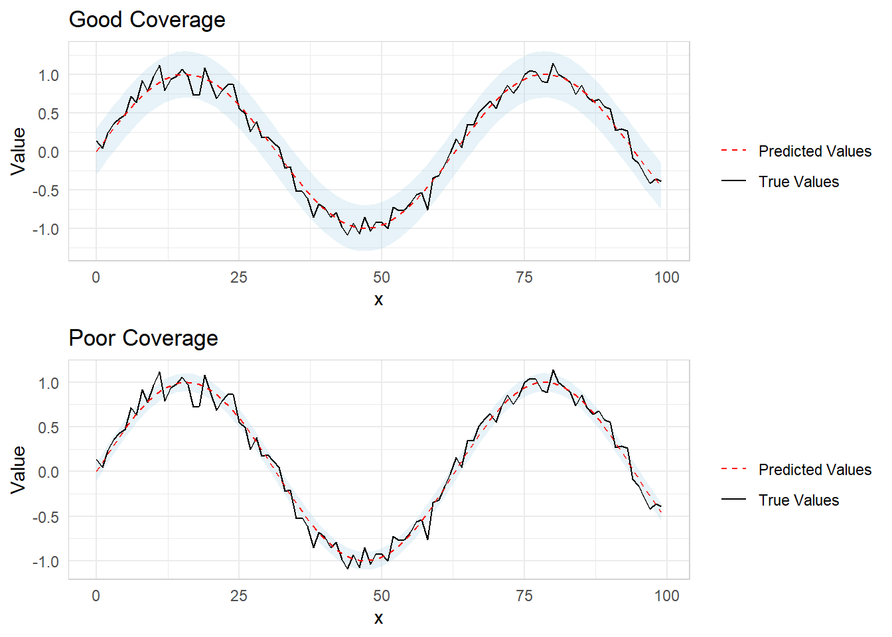
Evaluating probabilistic forecast accuracy
Sharpness
- Refers to the width of prediction intervals
- Measures how precise or focused the forecast is
Example: A forecast predicting monthly sales qty between 2500-5000 is sharper than 500-10000.
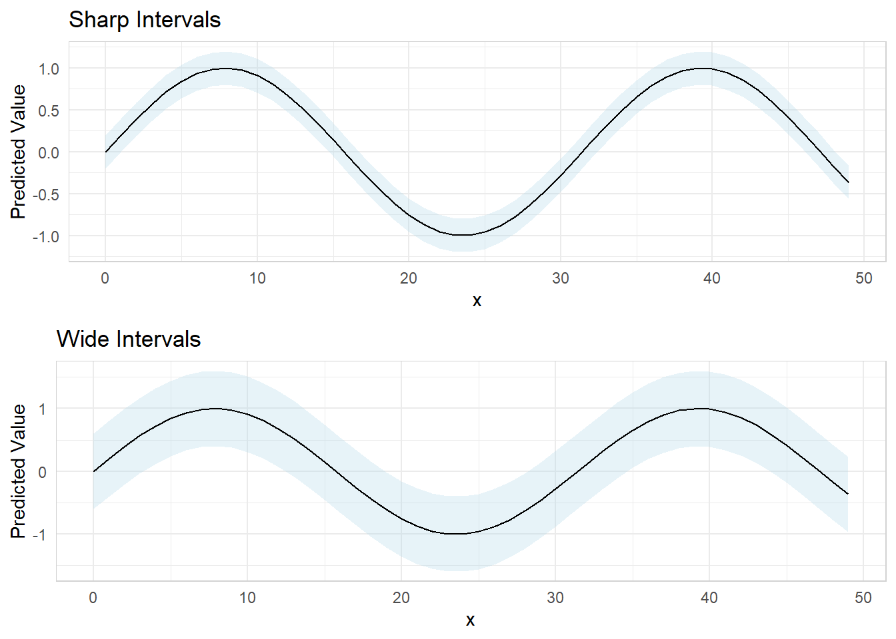
Evaluating probabilistic forecast accuracy
Quantile score/ Pin ball loss
- Assesses entire prediction interval, not just point forecast
- Penalizes too narrow and too wide intervals
- Interpretation: Lower values indicate better calibrated intervals
\[ Q_{p,t} = \begin{cases} 2(1 - p)(f_{p,t} - y_t), & \text{if } y_t < f_{p,t}, \\[1mm] 2p(y_t - f_{p,t}), & \text{if } y_t \geq f_{p,t}. \end{cases} \]
Evaluating probabilistic forecast accuracy
CRPS (Continuous Ranked Probability Score)
- Proper scoring rule
- Measures accuracy of full predictive distribution
- Generalizes absolute error to probabilistic forecasts
- Interpretation: Lower CRPS = better forecast
- Advantage: Sensitive to distance, rewards sharp and calibrated forecasts
\(\large \text{CRPS} = \text{mean}(p_j),\)
where
\(p_j = \int_{-\infty}^{\infty} \left(G_j(x) - F_j(x)\right)^2dx,\)
Evaluating probabilistic forecast accuracy
CRPS (Continuous Ranked Probability Score)
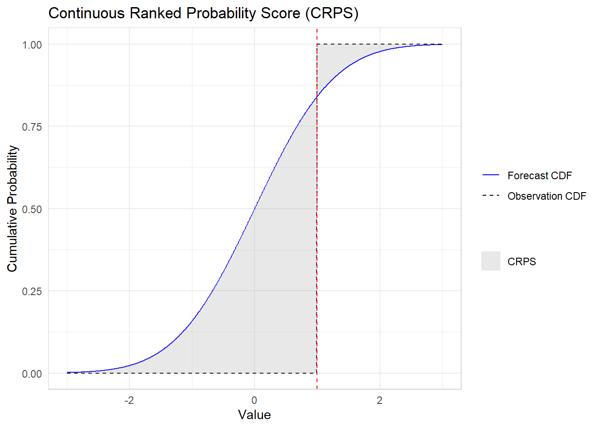
Evaluating probabilistic forecast accuracy
fit_all_fc |>
accuracy(med_tsb_filter |>
filter(hub_id == 'hub_1' & product_id == 'product_5'),
measures = list(distribution_accuracy_measures)) |>
select(-percentile)# A tibble: 5 × 5
.model hub_id product_id .type CRPS
<chr> <chr> <chr> <chr> <dbl>
1 arima hub_1 product_5 Test 6311.
2 ets hub_1 product_5 Test 6648.
3 mean hub_1 product_5 Test 7081.
4 naive hub_1 product_5 Test 8034.
5 snaive hub_1 product_5 Test 7823.Now it is your turn.
15:00
Advance forecasting models
Feature engineering
In this training, we only do a basic feature engineering.
# Load data
from google.colab import files
uploaded = files.upload()
df = pd.read_csv('med_tsb_filter.csv')
# Make the yearmonth as date format
df['date'] = pd.to_datetime(df['date']) + pd.offsets.MonthEnd(0)
# Feature Engineering
df['month'] = df['date'].dt.month # create month feature
# categorical encoding
enc = OrdinalEncoder()
df[['hub_id_cat', 'product_id_cat']] = enc.fit_transform(df[['hub_id', 'product_id']])
# Create unique identifier for series
df['unique_id'] = df['hub_id'] + '_' + df['product_id']Feature engineering
# Create series and exogenous data
series = df[['date', 'unique_id', 'quantity_issued']]
exog = df[['date', 'unique_id', 'month', 'hub_id_cat', 'product_id_cat']]
# Transform series and exog to dictionaries
series_dict = series_long_to_dict(
data = series,
series_id = 'unique_id',
index = 'date',
values = 'quantity_issued',
freq = 'M'
)
exog_dict = exog_long_to_dict(
data = exog,
series_id = 'unique_id',
index = 'date',
freq = 'M'
)Feature engineering
# Partition data in train and test
end_train = '2022-06-30'
start_test = pd.to_datetime(end_train) + pd.DateOffset(months=1) # Add 1 month
series_dict_train = {k: v.loc[:end_train] for k, v in series_dict.items()}
exog_dict_train = {k: v.loc[:end_train] for k, v in exog_dict.items()}
series_dict_test = {k: v.loc[start_test:] for k, v in series_dict.items()}
exog_dict_test = {k: v.loc[start_test:] for k, v in exog_dict.items()}XGBoost
Extreme Gradient Boosting (XGBoost) is a scalable tree-based gradient boosting machine learning algorithm.
\(\hat{y}_{t+h|t} = \sum_{k=1}^K f_k(\mathbf{x}_t), \quad f_k \in \mathcal{F}\)
Where: \(K\) = number of trees, \(f_k\) = tree function, \(\mathbf{x}_t\) = feature vector (lags, calendar features, etc.)
XGBoost
Assumptions
- Predictive patterns can be captured through feature engineering
- Relationships between features and target are stable
- No strong temporal dependencies beyond engineered features
Strengths & Weaknesses
✓ Handles non-linear relationships well
✓ Provides feature importance metrics
✗ Requires careful parameter tuning
✗ Less interpretable than linear models
XGBoost
# Fit xgboost forecaster
regressor_xgb = XGBRegressor(tree_method = 'hist',
enable_categorical = True)
forecaster_xgb = ForecasterRecursiveMultiSeries(
regressor = regressor_xgb,
transformer_series = None,
lags = 4,
dropna_from_series = False
)
forecaster_xgb.fit(series=series_dict_train, exog=exog_dict_train, suppress_warnings=True)
forecaster_xgbXGBoost
# Feature importance plot for XGB
plt.figure(figsize=(10, 6))
feat_xgb = forecaster_xgb.get_feature_importances()
sns.barplot(x='importance', y='feature', data=feat_xgb.sort_values('importance', ascending=False).head(10))
plt.title('XGBoost Feature Importance')
plt.tight_layout()
plt.show()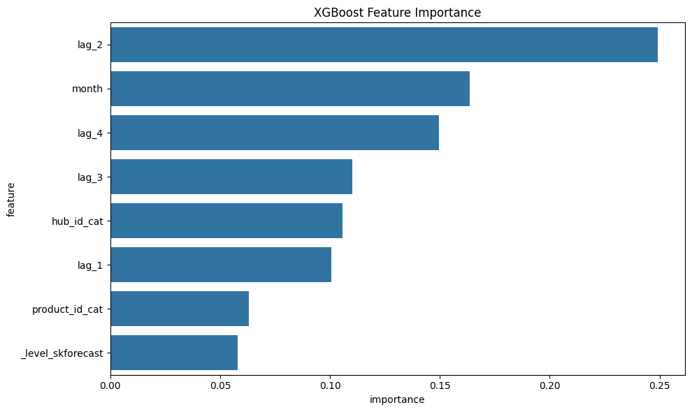
XGBoost
# XGB predictions and plot
boot = 100
predictions_xgb = forecaster_xgb.predict_bootstrapping(steps=12, exog=exog_dict_test, n_boot=boot)
# Create prediction DF and plot example series
example_series = list(series_dict_test.keys())[2]
xgb_pred_test = predictions_xgb[example_series].copy()
# Calculate statistics
mean_pred = xgb_pred_test.mean(axis=1)
lower_pred = xgb_pred_test.quantile(0.025, axis=1)
upper_pred = xgb_pred_test.quantile(0.975, axis=1)XGBoost
# Plotting
plt.figure(figsize=(12, 6))
plt.plot(series_dict_test[example_series], label='Actual', color='black')
plt.plot(mean_pred, label='XGB Prediction', color='blue')
plt.fill_between(mean_pred.index,
lower_pred,
upper_pred,
color='blue', alpha=0.2)
plt.title('XGBoost Forecast with 95% Prediction Intervals')
plt.legend()
plt.show()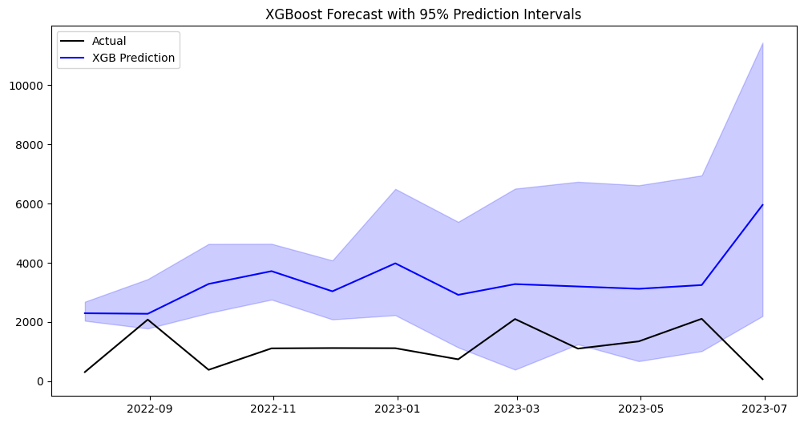
XGBoost
# Create prediciton df
pred_id = list(predictions_xgb.keys())
# Create an empty DataFrame
xgb_pred = pd.DataFrame(columns=['date', 'unique_id', 'model'] + [f'X_{i}' for i in range(boot)])
for i in pred_id:
xgb_pred_test = predictions_xgb[i]
xgb_pred_test = xgb_pred_test.reset_index()
xgb_pred_test.columns = ['date'] + [f'X_{i}' for i in range(boot)]
xgb_pred_test['unique_id'] = i
xgb_pred_test['model'] = 'xgb'
xgb_pred = pd.concat([xgb_pred, xgb_pred_test])
xgb_pred.head()LightGBM
Light Gradient Boosting Machine (LightGBM) uses leaf-wise tree growth for efficiency whereas other boosting methods divide the tree level‐wise.
LightGBM
Assumptions
- Similar to XGBoost but more efficient with large datasets
- Handles categorical features natively
Strengths & Weaknesses
✓ Faster training speed
✓ Lower memory usage
✗ Sensitive to small datasets
✗ May overfit with noisy data
LightGBM
# Fit lightgbm forecaster
regressor_lgbm = LGBMRegressor(
boosting_type = 'gbdt',
metric = 'mae',
learning_rate = 0.1,
num_iterations = 200,
n_estimators = 100,
objective = 'poisson')
forecaster_lgbm = ForecasterRecursiveMultiSeries(
regressor = regressor_lgbm,
transformer_series = None,
lags = 4,
dropna_from_series = False
)
forecaster_lgbm.fit(series=series_dict_train, exog=exog_dict_train, suppress_warnings=True)
forecaster_lgbmLightGBM
# Feature importance plot for LGBM
plt.figure(figsize=(10, 6))
feat_lgbm = forecaster_lgbm.get_feature_importances()
sns.barplot(x='importance', y='feature', data=feat_lgbm.sort_values('importance', ascending=False).head(10))
plt.title('LightGBM Feature Importance')
plt.tight_layout()
plt.show()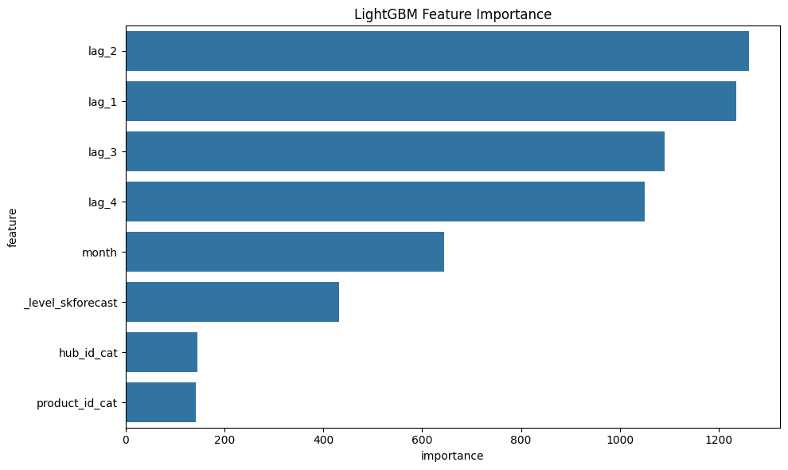
LightGBM
# LGBM predictions and plot
boot = 100
predictions_lgbm = forecaster_lgbm.predict_bootstrapping(steps=12, exog=exog_dict_test, n_boot=boot)
# Create prediction DF and plot example series
example_series = list(series_dict_test.keys())[2]
lgbm_pred_test = predictions_lgbm[example_series].copy()
# Calculate statistics
mean_pred = lgbm_pred_test.mean(axis=1)
lower_pred = lgbm_pred_test.quantile(0.025, axis=1)
upper_pred = lgbm_pred_test.quantile(0.975, axis=1)LightGBM
# Plotting
plt.figure(figsize=(12, 6))
plt.plot(series_dict_test[example_series], label='Actual', color='black')
plt.plot(mean_pred, label='LGBM Prediction', color='blue')
plt.fill_between(mean_pred.index,
lower_pred,
upper_pred,
color='blue', alpha=0.2)
plt.title('LGBM Forecast with 95% Prediction Intervals')
plt.legend()
plt.show()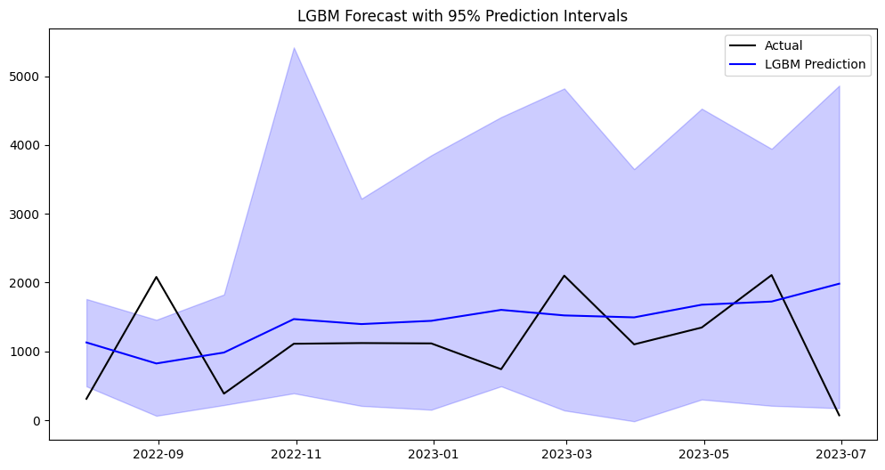
LightGBM
# Create prediciton df
pred_id = list(predictions_lgbm.keys())
# Create an empty DataFrame
lgbm_pred = pd.DataFrame(columns=['date', 'unique_id', 'model'] + [f'X_{i}' for i in range(boot)])
for i in pred_id:
lgbm_pred_test = predictions_lgbm[i]
lgbm_pred_test = lgbm_pred_test.reset_index()
lgbm_pred_test.columns = ['date'] + [f'X_{i}' for i in range(boot)]
lgbm_pred_test['unique_id'] = i
lgbm_pred_test['model'] = 'lgbm'
lgbm_pred = pd.concat([lgbm_pred, lgbm_pred_test])
lgbm_pred.head()Model evaluation
# Calculate metrics for both models
xgb_mase, xgb_rmse, xgb_qs, xgb_crps = calculate_metrics(predictions_xgb, series_dict_test, series_dict_train)
lgbm_mase, lgbm_rmse, lgbm_qs, lgbm_crps = calculate_metrics(predictions_lgbm, series_dict_test, series_dict_train)| Model | Average MASE | Average RMSE | Average Quantile Score | Average CRPS |
|---|---|---|---|---|
| XGBoost | 1.218 | 4878.992 | 1151.738 | 3548.056 |
| LightGBM | 1.061 | 4953.944 | 310.234 | 3498.346 |
Note: We can improve the performance of XGBoost and LightGBM through better feature engineering and hyperparameter tuning.
TimeGPT
Foundational time series model for time series forecasting by Nixtla (Read more).
Assumptions
- No strict stationarity requirements
- Automatically handles multiple series
Strengths & Weaknesses
✓ Zero configuration needed
✓ Handles complex patterns
✗ Requires API access
✗ Black-box model
TimeGPT
Get API key from Nixtla
- Visit https://nixtla.io/
- Sign up for free account
- Navigate to API Keys section
- Create new key and copy it
!pip install nixtla
# Load libraries
from nixtla import NixtlaClient
# Initialize Nixtla client
nixtla_client = NixtlaClient(api_key='your_api_key_here')TimeGPT
# Since we already have done the feature engineering, we dont need to do it again
# Create unique identifier and rename columns for TimeGPT
df_timegpt = df.rename(columns={'date': 'ds', 'quantity_issued': 'y'}).drop(columns=['hub_id', 'product_id'])
# Split data into train-test
end_train = '2022-06-30'
train_df = df_timegpt[df_timegpt['ds'] <= end_train]
test_df = df_timegpt[df_timegpt['ds'] > end_train]TimeGPT
# TimeGPT Base Model
timegpt_fcst = nixtla_client.forecast(
df=train_df,
h=len(test_df['ds'].unique()),
freq='M',
level=[90, 95] # 90% and 95% prediction intervals
)
nixtla_client.plot(train_df, timegpt_fcst, time_col='ds', target_col='y')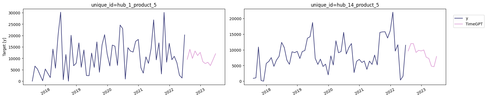
TimeGPT
# TimeGPT with Exogenous Variables
# Prepare exogenous data
exog_features = ['month', 'hub_id_cat', 'product_id_cat']
# Future exogenous variables (from your test set)
future_exog = test_df[['unique_id', 'ds'] + exog_features]
timegpt_reg_fcst = nixtla_client.forecast(
df=train_df,
X_df=future_exog,
h=len(test_df['ds'].unique()),
freq='M',
level=[90, 95]
)
nixtla_client.plot(train_df, timegpt_reg_fcst, time_col='ds', target_col='y')Model evaluation
# Calculate metrics for both models
xgb_mase, xgb_rmse, xgb_qs, xgb_crps = calculate_metrics(predictions_xgb, series_dict_test, series_dict_train)
lgbm_mase, lgbm_rmse, lgbm_qs, lgbm_crps = calculate_metrics(predictions_lgbm, series_dict_test, series_dict_train)
# Calculate metrics for base model
base_metrics = calculate_metrics(timegpt_fcst, test_df, train_df)
# Calculate metrics for regressor model
reg_metrics = calculate_metrics(timegpt_reg_fcst, test_df, train_df)| Model | Average MASE | Average RMSE | Average Quantile Score |
|---|---|---|---|
| TimeGPT Base Model | 1.019 | 4261.135 | 41.892 |
| TimeGPT Regressor Model | 1.125 | 5016.053 | 57.571 |
Other Models
Demographic forecasting method (FPSC Context)
A population-based contraceptive needs estimation model combining:
- Population dynamics
- Family planning indicators
- Method/brand distribution factors
Demographic forecasting method (FPSC Context)
\[\begin{equation} \begin{split} y_{i,t} = & \left(\sum_{j=15}^{50} \text{mCPR}_{t,j} \times \text{WomenPopulation}_{t,j}\right) \\ & \times \text{MethodMix}_{t,i} \times \text{CYP}_{t,i} \times \text{BrandMix}_{t,i} \times \text{SourceShare}_t \end{split} \end{equation}\]
- \(i\): Contraceptive product
- \(t\): Time period (year)
- \(\text{mCPR}\): Modern Contraceptive Prevalence Rate (%)
- \(\text{WomenPopulation}\): Women aged 15-49
- \(\text{MethodMix}\): Contraceptive method distribution
- \(\text{CYP}\): Couple-Years of Protection factor
- \(\text{BrandMix}\): Brand preference distribution
- \(\text{SourceShare}\): Provider type distribution
Demographic forecasting method (FPSC Context)
Assumptions
- Stable demographic patterns during forecast period
- Consistent reporting of family planning indicators
- Accurate CYP values for different methods
- Historical brand/source mixes remain valid
- Linear relationship between population and needs
- Proper spatial distribution via site coordinates
- Valid monthly weight distribution
Demographic forecasting method (FPSC Context)
Strengths & Weaknesses
✓ Directly ties to population dynamics
✓ Incorporates multiple programmatic factors
✓ Enables spatial allocation to health sites
✓ Aligns with public health planning frameworks
✗ Sensitive to input data quality
✗ Static assumptions about behavior patterns
✗ Limited responsiveness to sudden changes
✗ Provides national level need
Demographic forecasting method (FPSC Context)
Female condom needs (age 20-15) for 2020 (example)
| Parameter | Value | Unit | Sources |
|---|---|---|---|
| A. Women population 20 – 25 | 345,000 | # of people | WorldPop |
| B. Percentage of women who will use a contraceptive product (mCPR) | 68% | % | PMA DataLab |
| C. Percentage of the method mix | 26% | % | PMA DataLab |
| D. CYP | 120 | - | USAID |
| E. Percentage of brand A mix | 45% | % | Author calculation |
| F. Percentage of source mix | 13% | % | USAID |
| Total requirement (A × B × C × D × E × F) | 629,694 | # of products | - |
Next steps and further learning
Any Q/As?
Post-Training Feedback
Thank you!
Scan the QR Code and follow us on LinkedIn…